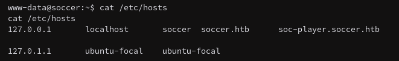

HTB Soccer Writeup
Box Overview
Soccer is listed as an Easy difficulty Linux box.
This box has a surprisingly even matrix and a very close number of user and root solves so privilege escalation might be pretty straightforward.
Reconnaissance
Nmap Scan
This is a long one so I’m going to cut off the rest of the output.
At least its more than another 22/80 box. I’m going to ignore the SSH port and maybe come back to that if SSH is used. The HTTP box has its own vhost soccer.htb, so that can be added to my /etc/hosts file.
Also there appears to be something running on port 9091, but I’ll leave that for now since the HTTP port is really of interest.
Walking the Application
The default page is pretty simple and doesn’t offer too much functionality at /.
The default landing page is a simple pretty static page with no header or footer. I might as well try gobuster and ffuf for more vhosts.
Gobuster Search
Using gobuster does get the /tiny subdomain so I can go ahead and visit that first.
Neat, some input. This leads me to a ‘Tiny File Manager’ page that requires login credentials. I don’t actually know anything about ‘Tiny File Manager’ so I need to research that first.
So its a PHP file manager, cool.
Exploitation
So after poking at the GitHub docs for a couple minutes, I found the default username/password combinations.
Might as well give it a try, who’s going to bruteforce this poor PHP passion project?
So that worked, nice. Since I write these as I’m doing the boxes, I now have to find a way to upload and execute code. I can also see that the Tiny File Manager version is 2.4.3, so there could be some cool exploits.
Okay so you can just drop the Pentest Monkey PHP reverse shell on it and that works.
Just upload it to the /uploads folder and click the Open button.
This does result in a gateway error but a shell gets returned.
Cool.
Post-Exploitation
We are dropped into the www-data user account so some lateral movement may be required.

Yup, I’ll most likely need to get the user account then root after that.

So I can find this vhost of soc-player so that can also be added to our /etc/hosts file and check it out.
Walking the Application Pt. 2
This looks different, might as well sign up an account and see what’s up.
So this presents a new page that allows the user to insert their ticket number, this box really keeps on giving.

And they’re WebSockets because why not? This WebSocket server is most likely what’s running on port 9091.
Sure looks like it.
The WebSocket connection most likely needs to be attacked using SQLi, there’s not much else to WebSockets that I know of that would be in an “Easy” box.
Exploitation Pt. 2
Since I don’t actually know how to test WebSockets for SQLi, I used the script outlined in this article: https://rayhan0x01.github.io/ctf/2021/04/02/blind-sqli-over-websocket-automation.html.
All that needs to be changed in the first ws_server parameter and the data parameter to id. Then run the script (given that no Python errors stop it).
Now I can send any sqlmap payload to this localhost Python server and they’ll be reflected in the WebSocket hosted on the Soccer box.

This might take a while but its working.
It does retrieve soccer_db with 5 databases, but really only the soccer_db database is the one of focus. The information_schema, mysql, performance_schema, and sys are standard.
I think that php reverse shell at the beginning was a rabbit hole.
Looks like I can move onto root now that I have basic user access.
Post-Exploitation Pt. 2
Now that I have the player accounts SSH credentials, the next logical step is to move towards the root account.
After running linPeas, the dstat command is executable by the group player.
After checking the dstat binary, there’s a good chance I can use it for privilege escalation.
dstat also supports plugins, so these could be the path to a privilege escalation.
And since it’s just Python, the plugin can be a simple command that elevates the user. I also noticed that doas is installed on the system, so that can be used to run dstat as root.
root is now achieved (also I changed to /bin/bash sorry about the continuity error).